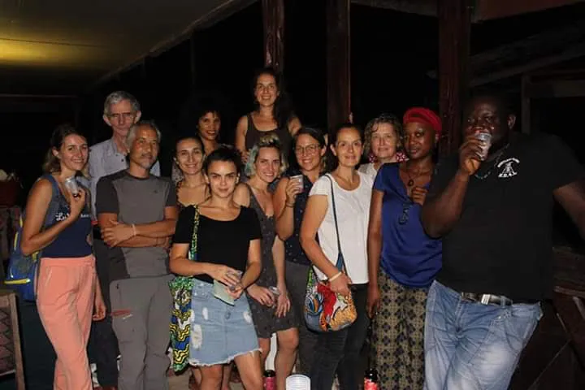
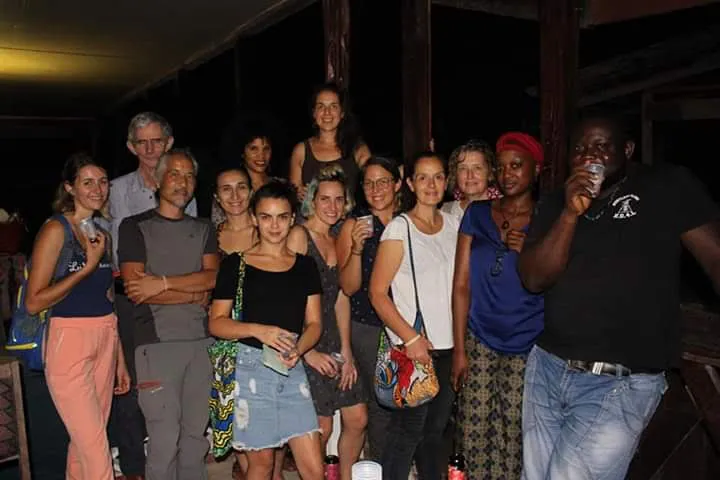

À propos
Il y a quelques années, après avoir exploré quelques facettes de mon métier d'infirmier en métropole, j'ai décidé d'aller exercer en Guyane. Là-bas, respectivement je suis allé en HAD, en CDPS (communément appelés dispensaires), CMP dans des communes isolées. Ce fut une expérience magnifique tant au point de vue professionnel qu'humain, tout cela car exercer auprès de multi-ethnies, Bushinengués (Ndjukas, Saramacas, Paramakas, Alukus), Amérindiennes, Hmong, Hispaniques, Portugaises... demande une adaptation non seulement de ses pratiques professionnelles mais aussi de son approche culturelle.
De supers équipes
J'ai souvenance d'une solidarité énorme entre nous, d'avoir fait partie d'équipes médicales bienveillantes durant ces 2 années. Le côté isolement ayant certainement joué pour beaucoup. Au cours de ce passage en Guyane, j’ai fait la rencontre de personnes ayant des parcours de vie peu ordinaires, mais dont le maître mot était cette « bienveillance ». Merci à toutes et tous de ces heures passées à échanger, au et en dehors du travail sur nos expériences professionnelles et tout le reste. Merci de ces bonnes soirées passées côté France, au Surinam chez les orpailleurs, aux fêtes Brésiliennes.


 



Une journée dans la peau d'un infirmier en CDPS
Il n'y a pas de journées type en fait, et selon les dispensaires on rajoutera les nuits et WE d'astreinte, les missions étant tellement variées. Petit briefing le matin avec toutes les équipes, le travail s'organise auprès des différents postes de soins, tels que les soins classiques, prise de sang, pansements, accueil des patients, surveillance, énormément de pédiatrie et de suivi de femmes enceintes. À tour de rôle, nous sommes également affectés à la pharmacie, à la préparation des médicaments. À cela ajouter qu'à la fermeture en fin de journée, l'équipe médicale et paramédicale passe en mode astreinte. La plupart des dispensaires se trouvant en commune et non desservis par la route, les Evasans sur l'hôpital de Cayenne se font par hélicoptère… et parfois l'attente peut en devenir interminable.


.webp)
L'hélicoptère : quel soulagement de l'entendre se poser après des heures, et même des jours de stress. Pas de vols la nuit, pas de vol par mauvais temps, et pas d'hélico si déjà appelé pour une urgence sur un autre centre. Parfois les semaines étaient rythmées au rythme des rotations de l'hélicoptère.


Mission de prévention, de consultations dans les Kampoes
Régulièrement dans le mois des missions de prévention sont organisées dans les Kampoes (villages du fleuve), afin de suivre la population qui ne peut se déplacer au centre de soins. Les missions sont variées : suivi des femmes enceintes, prévention des IST (notamment Sida), prévention des maladies infectieuses tropicales, enfin un large panel de soins. Ces populations, si nous n'allons pas à leur rencontre, sont perdues de vue dans le parcours de santé. Leur difficulté à circuler en est une des principales raisons, pas de pirogue, aucun accès à travers la forêt Amazonienne à part le fleuve Maroni (dans l'ouest, l'Oyapock dans l'est) qui sert de voie de circulation. À savoir qu'il existe une langue commune propre aux populations vivant le long du fleuve appelée communément le Talki (mélange de créole, hollandais, espagnol, portugais). Parlez le Talki sur le fleuve et vous irez jusqu'au bout du monde, bon au moins pour se débrouiller en Guyane ou les pays frontaliers auprés de toutes ces populations différentes, ce qui n'est déja pas mal
Le CDPS de Trois Sauts
Dépendant de son centre de référence à St Georges de l'Oyapocke et situé à la frontière du Brésil, Trois Sauts est l’un des villages les plus reculés de Guyane. Les infirmiers y jouent un rôle central dans l’accès aux soins… le seul accés s'éffectue par le fleuve. Plus tard en periode Covid, l'hélicoptere sera un des moyens utilisés pour éffectuer les rotations en urgence. Le trajet au départ de Saint Georges prend 2 jours idéalement, plus suivant la saison sèche ou saison des pluies. Une halte se fait à Camopi chez les indiens Tekos. A Trois Sauts c'est la communauté Wayampi qui y réside. Il faut une autorisation préfectorale pour y accéder (reserve Amérindienne). Je passerai les raisons qui m'ont poussé à me porter volontaire pour monter exercer. Mais des raisons violentes qui s'y sont passées auprés d'anciennes de mes collegues a la fin de l'année 2019, ont été une de mes motivations afin que le centre puisse poursuivre ses missions et rester ouvert.